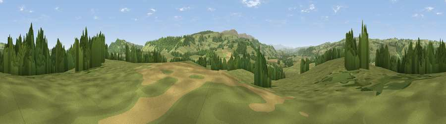

Priory Wood
#21902 in England · top 63% of its area beats it · near CliffordThe view, rendered

A 360° render of this exact spot computed from the terrain model, tree cover and land cover — summer colours, afternoon light, calibrated against photographs of famous viewpoints. Real trees, hedges and buildings will differ in detail.
The panorama
Grey silhouette: terrain skyline in each direction (720 bearings, Earth curvature and refraction included). Dashed green: skyline with trees (+15 m) and buildings (+8 m) as obstacles. Blue strip: how far the ground is visible on each bearing.
Where the view opens
Wedge length = distance to the farthest visible ground on that bearing (vegetation-aware). Rings at 10, 25 and 50 km.
What fills the view
67% grassland · 26% woodland · 6% cropland
Angular shares of the visible panorama (visual magnitude), not map area. Landscape diversity 0.35 (0–1 Shannon).
Key numbers
More beautiful places nearby
The staircase of upgrades: each row has a higher view potential than everything closer. Driving times are estimates from straight-line distance, calibrated against real road routing — check an actual route before setting out.
| Place | Direction | Drive | Score |
|---|---|---|---|
| Viewpoint near Clifford | NNE · 1 km | ~2 min | 53.8 |
| Viewpoint near Whitney | ENE · 1 km | ~4 min | 62.0 |
| Mouse Castle | SSW · 3 km | ~7 min | 69.2 |
| Viewpoint near Cusop | S · 4 km | ~9 min | 73.5 |
| Cusop Hill | S · 4 km | ~10 min | 76.3 |
| Merbach Hill | E · 5 km | ~10 min | 81.1 |
| Viewpoint near Craswall | S · 9 km | ~17 min | 81.5 |
| Garway Hill | SE · 27 km | ~43 min | 84.6 |
52.09946, -3.08500 · source: dobih hill · position refined by local search. Computed location — check access rights before visiting.